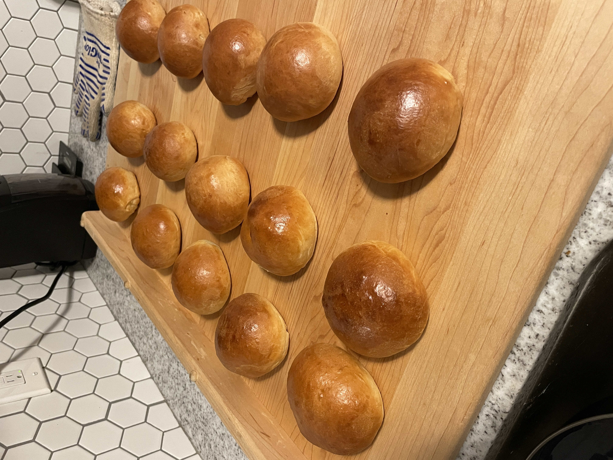

Milk Buns

Description
This receipe is based on Japanese Hokkaido milk bread and is my new favorite receipe for sandwich buns.
These buns aren't limited to just sandwiches. They make for a great dinner roll, or a quick snack with peanut butter or jam.
Ingredients
Roux
- 43g water
- 43g whole milk
- 14g bread flour
Dough
- 300g bread flour
- 14g nonfat dry milk
- 50g granulated sugar
- 6g salt
- 1 tablespoon instant yeast
- 113g whole milk plus additional for wash
- 1 egg
- 57g unsalted room temperature butter
Steps
- Combine the roux ingredients in a small sauce pan. Whisk until no lumps remain
- Place the saucepan over low heat and cook, continuously whisking, until thickened. Transfer into a bowl and place in refridgerator to cool 10-15 mins
- While the roux is cooling, begin to make the dough. Mix the bread flour, dry milk, sugar, salt, and yeast together in a large bowl or stand mixer bowl
- In a separate bowl, mix together the whole milk, egg, and cooled roux. Once combined, mix into the dry ingredients
- Knead by hand or using a dough hook attachment on a stand mixer. The dough will be sticky. Avoid the urge to add more flour
- Use the Window Pane Test to help determine when the dough had been properly kneaded. Once satisfactory, mix in the butter
- Shape the dough into a ball and let proof in a lightly greased bowl until puffy, but not necessarily doubled in size
- Once proofed, deflate and divide into portions of 92-97 grams each and gently shape into balls. Transfer to a parchment lined baking tray, keeping 3-4 inches between dough balls
- Brush tops of dough balls with remaining whole milk and let sit 30-40 minutes. While buns rest, preheat oven to 350 degrees farenheit
- Bake until dark golden brown on top, 25-30 minutes. Let cool on tray for about 10 minutes, then transfer to wire rack